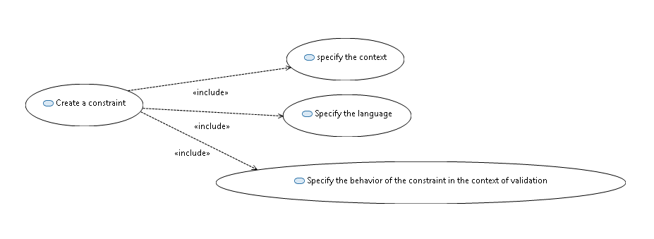
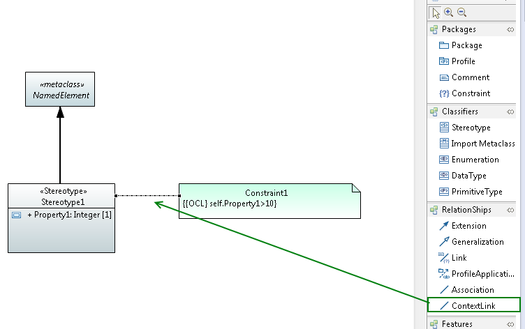
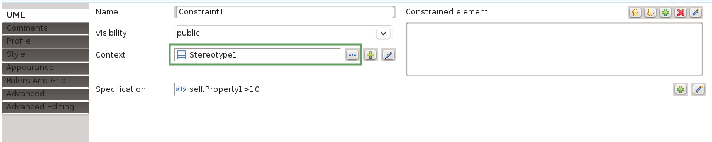
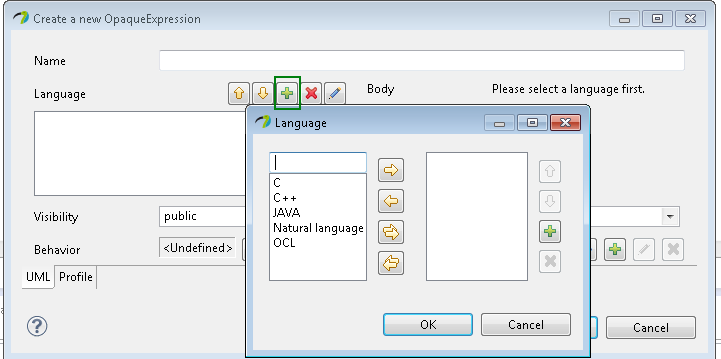
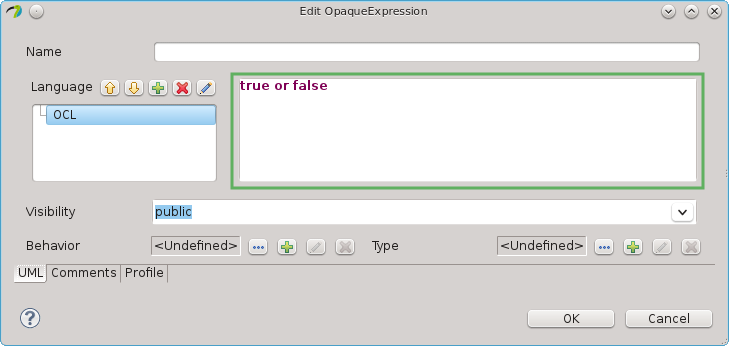
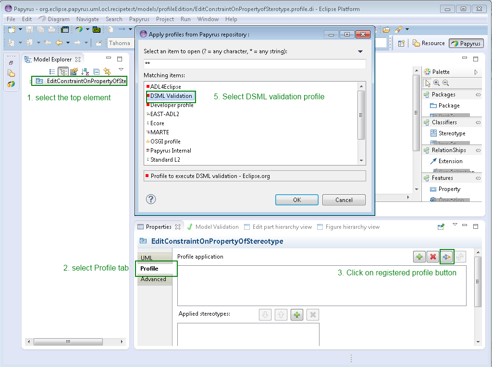
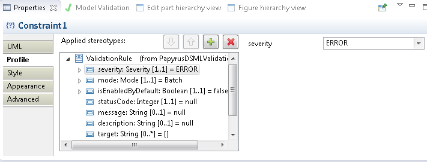
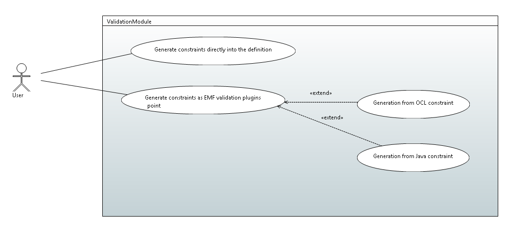
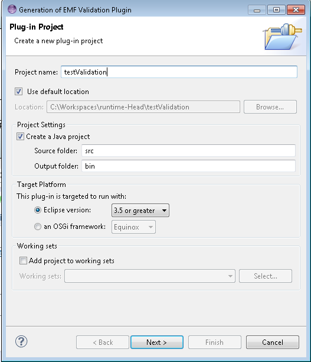

In order to validate constraints from a profile, first creation of constraints with specific annotations will be explained and then generation of validation will be explained.

Figure 1: Constraint creation
In the context of the construction of a profile (but also in any class diagram), it is possible to add constraints.
A constraint is a condition or restriction expressed in a language for the purpose of declaring some of the semantics of an element.
In the context of a profile diagram you can create a constraint from the palette.
Figure 2: Constraint creation from the palette
From the model explorer, click right --> new child--> Create a new Constraint
Figure 3: Constraint creation from the model explorer
Before editing a constraint, it is important to specify the context of a constraint; it can be for instance a stereotype or an operation (in fact, it can be any meta-model element that inherits from namespace).
Since Eclipse Luna, Papyrus automatically selects the context-link-tool after creation of a constraint. It will also already set the newly created constraint as one end of the context-link relationship. The user needs to select the owning context which can be any meta-model elements that is a sub-class of namespace. This tool is available in the Relationships folder of the the palette, as shown in the following figure:

Figure 4: Context link creation in a the profile diagram
From the property view, the context can be specified:

Figure 5: specify context from the property view
It is possible to precise the language of the constraint into Papyrus. The constraint body may be written into OCL, JAVA, or natural language.
In order to make constraints usable by the Papyrus, constraint must be written in OCL or JAVA.
The default language for editing a constraint is OCL (controllable via the preferences).
At the creation, after setting the context, you can choose the editor for the constraint:
Figure 6: choose the editor for the constraint
Alternatively, the default editor for constraints (controllable via the preferences) will pop-up on the second click on a constraint or when using the keyboard shortcut F2.
You can also specify the language in the property view:
Figure 7: creation of a specification for the constraint
You can add the language, see following figure:

Figure 8: specify the language
Then if you want you write the body in the specified language:

Figure 9: Write the body of the opaque expression
Into Papyrus, the behavior of the constraint during the validation can be precise.
It is possible to precise:
For advanced user you can also precise:
Apply the DSML validation profile

Figure 10: apply DSML profile
Apply Stereotype on constraint
Figure 11: Apply validationRule stereotype
Then you can edit property of stereotype to add information about the behavior of the validation

Figure 12: edition of the property of stereotype

Figure 13: Constraint generation
Constraint written in OCL in the profile can be generated into the definition of the profile and taken in charge during the validation of the model.
When you save the profile,Papyrus asks to you if want to define the profile.
Click on yes and then do not forget to check save OCL constraint in the definition
Figure 14: save OCL constraints in the definition
The user can generate plugins that wrap constraint and can be used in the EMF plugin validation.
The constraint can be generated in Java code, or directly from OCL.
Select the root profile
Click right on the model explorer-> create validation plugin for this DSML
Then a wizard to create the validation is launched. You have to give a name for you validation plugin.

Figure 15: wizard of constraint validation creation
The you need to install the created plugin.